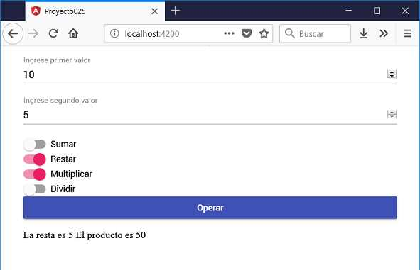

Otro control de formulario disponible en Angular Material con un objetivo similar a los checkbox de HTML es la componente 'mat-slide-toggle'.
La componente 'mat-slide-toggle' puede estar encendida o apagada. El cambio se produce mediante un clic del mouse o el arrastre (de uso común en un dispositivo táctil)
Definir un formulario web que permita cargar dos valores numéricos y mediante 4 'mat-slide-toggle' permitir indicar si queremos sumar, restar, multiplicar y/o dividir los valores ingresados. Efectuar la operación al presionar un botón.
Crearemos primero el proyecto
ng new proyecto025
Procedemos a instalar todas las dependencias de Angular Material ayudados por Angular CLI mediante el comando 'add' (Cargar la librería HammerJS para que funcione correctamente el control mat-slide-toggle):
ng add @angular/material
Modificamos el archivo 'app.module.ts' donde debemos importar los módulos de Angular Material que requiere nuestro proyecto:
import { BrowserModule } from '@angular/platform-browser';
import { NgModule } from '@angular/core';
import { AppComponent } from './app.component';
import { BrowserAnimationsModule } from '@angular/platform-browser/animations';
import { FormsModule } from '@angular/forms';
import { MatInputModule } from '@angular/material/input';
import { MatButtonModule } from '@angular/material/button';
import {MatSlideToggleModule} from '@angular/material/slide-toggle';
@NgModule({
declarations: [
AppComponent
],
imports: [
BrowserModule,
BrowserAnimationsModule,
FormsModule,
MatInputModule,
MatButtonModule,
MatSlideToggleModule
],
providers: [],
bootstrap: [AppComponent]
})
export class AppModule { }
Como vemos aparece el nuevo módulo MatSlideToggleModule.
Modificamos el archivo 'app.component.ts' con la lógica de nuestra componente que permita operar los dos valores ingresados dependiendo de las selecciones de los mat-slide-toggle:
import { Component } from '@angular/core';
@Component({
selector: 'app-root',
templateUrl: './app.component.html',
styleUrls: ['./app.component.css']
})
export class AppComponent {
valor1!:number;
valor2!:number;
resultado!:string;
opcion1=false;
opcion2=false;
opcion3=false;
opcion4=false;
operar() {
this.resultado='';
if (this.opcion1) {
let ope = this.valor1 + this.valor2;
this.resultado+=`La suma es ${ope} `;
}
if (this.opcion2) {
let ope = this.valor1 - this.valor2;
this.resultado+=`La resta es ${ope} `;
}
if (this.opcion3) {
let ope = this.valor1 * this.valor2;
this.resultado+=`El producto es ${ope} `;
}
if (this.opcion4) {
let ope = this.valor1 / this.valor2;
this.resultado+=`La division es ${ope} `;
}
}
}
Codificamos la interfaz visual en el archivo 'app.component.html':
<div class="contenedor">
<mat-form-field>
<input matInput [(ngModel)]="valor1" type="number" placeholder="Ingrese primer valor">
</mat-form-field>
<mat-form-field>
<input matInput [(ngModel)]="valor2" type="number" placeholder="Ingrese segundo valor">
</mat-form-field>
<mat-slide-toggle [(ngModel)]="opcion1">Sumar</mat-slide-toggle>
<mat-slide-toggle [(ngModel)]="opcion2">Restar</mat-slide-toggle>
<mat-slide-toggle [(ngModel)]="opcion3">Multiplicar</mat-slide-toggle>
<mat-slide-toggle [(ngModel)]="opcion4">Dividir</mat-slide-toggle>
<button mat-raised-button color="primary" (click)="operar()">Operar</button>
<p>{{resultado}}</p>
</div>
La hoja de estilo de la componente que se encuentra en 'app.component.css' es:
.contenedor {
display: flex;
flex-direction: column;
margin:1rem auto;
max-width: 600px;
}
Si ejecutamos ahora la aplicación podemos comprobar cual es la estética de la componente mat-slide-toggle:
Podemos probar esta aplicación en la web aquí.
En el archivo 'app.component.html' definimos el selector 'mat-slide-toggle':
<mat-slide-toggle [(ngModel)]="opcion1">Sumar</mat-slide-toggle> <mat-slide-toggle [(ngModel)]="opcion2">Restar</mat-slide-toggle> <mat-slide-toggle [(ngModel)]="opcion3">Multiplicar</mat-slide-toggle> <mat-slide-toggle [(ngModel)]="opcion4">Dividir</mat-slide-toggle>
En el archivo 'app.component.ts' definimos cuatro atributos donde se almacenan cual de los mat-checkbox se encuentran seleccionados:
export class AppComponent {
valor1=null;
valor2=null;
resultado=null;
opcion1=false;
opcion2=false;
opcion3=false;
opcion4=false;
En el archivo 'app.module.ts' importamos todos los módulos necesarios para trabajar con este formulario de Material:
import { FormsModule } from '@angular/forms';
import { MatInputModule } from '@angular/material/input';
import { MatButtonModule } from '@angular/material/button';
import {MatSlideToggleModule} from '@angular/material/slide-toggle';
Y los añadimos en la propiedad imports del decorador:
imports: [
BrowserModule,
BrowserAnimationsModule,
FormsModule,
MatInputModule,
MatButtonModule,
MatSlideToggleModule
],